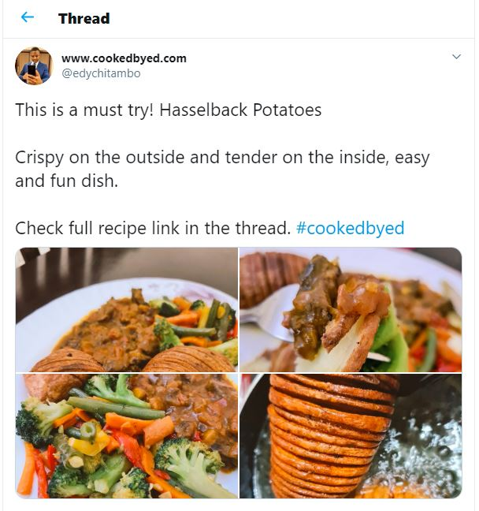

Are you a fellow foodie?
I've got you covered.
There are a few Twitter accounts that I started following during the
lockdown. Their recipes are quite easy to follow and they use everyday ingridients
There is also a blog that I will be sharing.
Cooked by Ed
Ed also has a blog. Click the button below to check it out
Click the button below to go to his blog
Cooking with Luyanda

Luyanda shares her recipes both on Twitter and her blog
Click the button below to visit her site
Hearty and home cooked
Silindokuhle shares his recipes both on Twitter( @Silindokuhle_) and Instagram ( @heartyandhomecooked)